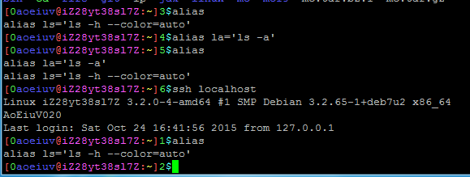
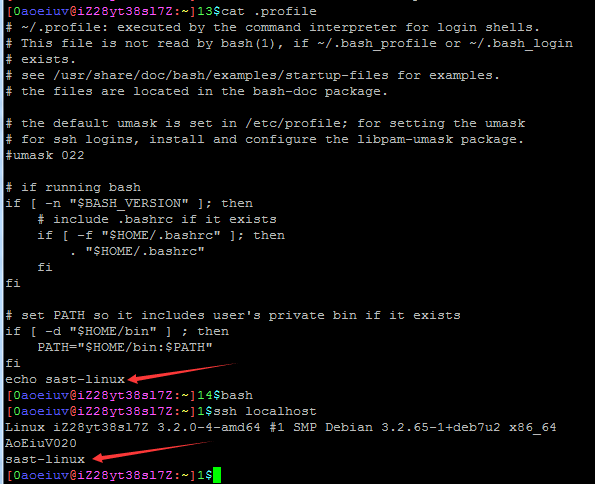
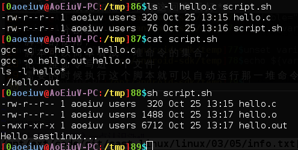
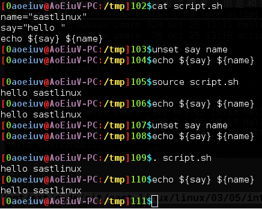

脚本，首先是Run Commands，直译是运行命令，感觉有点奇怪，怎么翻译都奇怪，其实这个和自动执行的脚本有关，比如bash，每次启动bash，都会自动运行家目录下的.bashrc这个文件里的第一行命令，这个rc就是Run Commands，这两个字母还是比较常用的，各种程序的自动运行的脚本都喜欢带这两个字母，比如zsh的自动运行脚本叫.zshrc，vim的自动运行脚本叫.vimrc，linux图形界面的自运行脚本叫.xinitrc，这些文件里放着相应程序的配置或者说初始化信息，前面说的alias和变量，就要在这里设置才能保证每次都能用的，否则alias和其他变量的设置都是一次性的。

对于Shell，主要有两种情况会调用这个.bashrc，这里就不说那些“交互式shell和非交互式shell”这些看起来高大上的话了，一种是就比如ssh远程控制，你们现在用putty之类的登陆上来，就会启动Shell，这时就会自动运行.profile，然而在.profile里面又有一句 . "$HOME/.bashrc"调用.bashrc，另一种就是，登陆了以后，输入命令bash，也会启动Shell，这时直接自动运行.bashrc。

脚本的使用，脚本可以简单看成一堆命令的集合，把一堆命令写进一个文件，需要的时候执行这个脚本就可以自动运行那一堆命令，下图是写个脚本用来编译一个c语言程序。

上图里的sh script.sh是让一个新的Shell去执行这个脚本，如果是想在脚本里设置变量，就不能这样调用，因为新的Shell执行脚本设置了变量，但是和当前的Shell无关，要用当前的Shell去执行脚本，需要另一个内部命令，source，还有个内部命令.小数点，和source功能一样。
